Constantinople, founded by Roman Emperor Constantine the Great in 330 AD, became the capital of the Byzantine Empire and one of the most important cities in the world for over a thousand years. Strategically located on the Bosporus Strait, it served as a vital link between Europe and Asia, controlling key trade routes and influencing both Eastern and Western civilizations. The city was renowned for its massive walls, thriving markets, and rich blend of cultures, languages, and religions.
Constantinople reached new heights during the reign of Emperor Justinian I in the 6th century. Determined to restore the glory of the Roman Empire, Justinian embarked on an ambitious campaign of military conquests, legal reform, and monumental construction. His most enduring legacy is the Hagia Sophia, an architectural masterpiece that redefined the skyline of the city. Built in just five years, the Hagia Sophia was the largest cathedral in the world at the time, famous for its soaring dome, lavish decorations, and spiritual significance. It stood not only as a place of worship but also as a powerful symbol of imperial authority and the unification of church and state. Under Justinian's rule, Constantinople became a beacon of Orthodox Christianity and a cultural and political capital whose influence echoed across centuries.
Constantinople reached new heights during the reign of Emperor Justinian I in the 6th century. Determined to restore the glory of the Roman Empire, Justinian embarked on an ambitious campaign of military conquests, legal reform, and monumental construction. His most enduring legacy is the Hagia Sophia, an architectural masterpiece that redefined the skyline of the city. Built in just five years, the Hagia Sophia was the largest cathedral in the world at the time, famous for its soaring dome, lavish decorations, and spiritual significance. It stood not only as a place of worship but also as a powerful symbol of imperial authority and the unification of church and state. Under Justinian's rule, Constantinople became a beacon of Orthodox Christianity and a cultural and political capital whose influence echoed across centuries.

